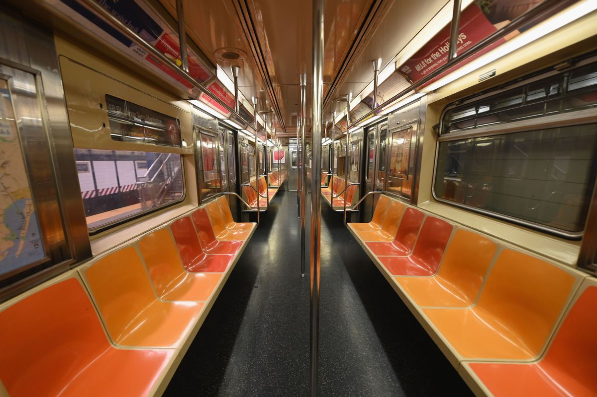

The issue of rising crime rates in the New York City subway is affecting college students who studies in NYC. Many incidents happened in NYC subway in 2021-2022, such as robbery, assault, harrassment, gun violence, etc. We are not having a safe environment for subway commuters.
The Brooklyn shooting incident happened on April 12th triggered a lot of fears from people living in New York. Journalist Bobby Caina Calvan from ABC News writes about the Brooklyn Sunset Park subway shooting in his news article. Calvan first describes the incidents, then includes an interview with a subway commuter, Julia Brown. Brown says that she still takes the subway that afternoon after the shooting, since she has no choice other than taking the subway. Calvan also includes perspectives from public officials and a former city police officer. Public officials explain “the transportation system is crucial in the city’s recovery from COVID-19”. The former city police officer conveys that “episodes like Tuesday’s shooting are bound to provoke a new round of anxiety, especially among people who use the subway” (Calvan). People living in New York City rely on the subway for transportation. After the Brooklyn subway shooting, people will ride the subway in fear.
CBS News reporter Marcia Kramer raises awareness of the safety issues in the NYC subway by including the Morning Consult online poll in her news article. The public opinion poll about the NYC safety issue, conducted by Morning Consult Company in March 2022, analyzes what aspects may potentially lead to subway transit crime. Some New Yorkers indicate that there is no action on addressing homelessness and mental illness, while others point out that the crime rate has increased mainly due to the pandemic. Besides, some people mention that public education needs to be considered, which is indirectly associated with the city’s subway crime rate. Majority of people do not feel safe when riding the train to work (Kramer). These above social root issues need to be addressed in order to create a safer and better commuting environment. Nevertheless, the safety of the NYC subway is a top concern for New Yorkers or people living in New York.
In my research from Washington Square News, I found that NYU students are in fear while riding the subway. After the tragic subway incident of Michele Go, several students reported that they feel unsafe in the West 4 Street Station, which is the closest station to NYU’s Washington Square campus (Moniz). Back in October, 2021, a Steinhardt sophomore named Chi Tran was a victim of an attempted stabbing by a man on the Q train (Moniz). Tran said that it was his first time being in an actual incident and he felt scared. However, concerns and fears resurface among NYU students who commute to college campus by subway.